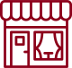

Why you’ll love
vacation in Burgundy
vacation in Burgundy
Может быть, нет более прекрасного способа исследовать деревенские деревни вневременной Бургундии, чем с речной баржи на берегу реки Сона. Перемещение от одного ошеломляющего пейзажа до другого, остановка, чтобы бродить по знаменитым виноградникам региона, ездить на велосипедах через его обширные леса и наслаждаться его незабываемым ароматом.

672
Trips

98
Trips

2,231
Trips
1,245
Trips
What Burgundy is about
Две великие французские страсти, вино и еда, собрались здесь в особенно богатой и соблазнительной форме. В 2015 году виноградники Бургундии получили статус ЮНЕСКО в знак признания многовековой истории виноградарства . Сочетая вино и гастрономию, Бургундия будет вдохновлять Вас.